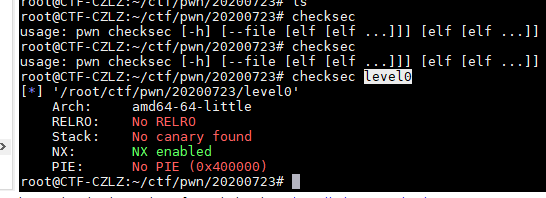
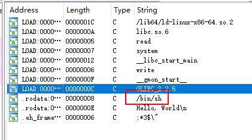
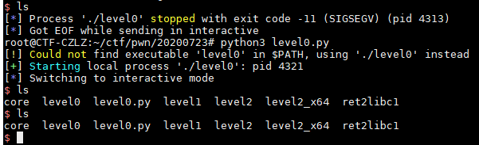
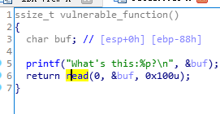
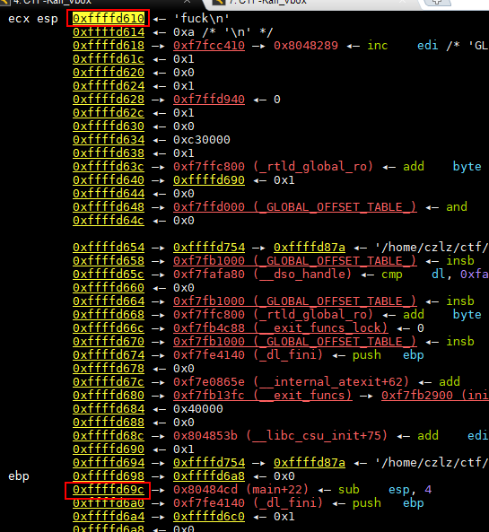
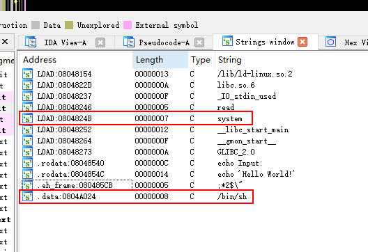

前言
知识点太多，无力吐槽。笔记
常用工具
1、可执行文件，文件头检查
checksec 文件名
2、查找代码块
ROPgadget –binary level2 –only “pop|ret” | grep exb
gdb-pwndbg工具
安装
git clone https://github.com/pwndbg/pwndbg
cd pwndbg
./setup.sh
操作指令
| 命令 | 缩写 | 效果 |
|---|---|---|
| gdb |
添加新程序 | |
| gdb attach |
负载运行的程序 | |
| set args <*argv> | 设置程序运行参数 | |
| show args | 查看设置好的运行参数 | |
| quit | q | 退出gdb |
| symbol |
sy | 导入符号表 |
| info <*b> | i | 查看程序的状态/*查看断点 |
| frame | f | 查看栈帧 |
| backtrace | bt | 查看堆栈情况 |
| list | l | 显示源代码(debug模式) |
| display | disp | 跟踪查看某个变量 |
| start | 启动程序并中断在入口debug模式停在main()，否则停在start() | |
| run | r | 直接运行程序直到断点 |
| continue | c | 暂停后继续执行程序 |
| next | n | 单步步过 |
| step | s | 单步步入，函数跟踪 |
| finish | fin | 跳出，执行到函数返回处 |
| break /* |
b | 下断点 |
| stack | 显示代码行数 | |
| watch | 下内存断点并监视内存情况 | |
| p | 打印符号信息(debug模式) | |
| x / |
显示内存信息，具体用法附在下面 | |
| context | 打印pwnbdg页面信息 | |
| dps |
优雅地显示内存信息 | |
| disassemble |
打印函数信息 | |
| vmmap | 显示程序内存结构 | |
| search <*argv> | 搜索内存中的值输入 search -h 可查询用法 | |
| checksec | 查看程序保护机制 |
解题
0x01. level0
分析
先输入checksec level0检查一下程序的情况

居然是个64位的程序。丢IDA里看看情况

Shift+F12直接看到了特殊的字符。双击进入，再用X跟进一下。来到了这里
1 | int callsystem() |
记录一下这个函数的地址。后面回调应当就要用到这个地址信息了:0x0000000000400596
解题
1、gdb level0 #调试程序
2、start #运行程序，此时会断在start()位置。
3、b main #下断点
4、r #运行到断点
5、n #步进
6、s #步入到vulnerable_function函数
7、n #步进几步
8、输入几个测试字符串。
9、计算一下内存偏移量。0x7fffffffe378-0x7fffffffe2f0=136
差不多了，写个代码实现
1 | import pwn |

出来了——激动呀！
0x02. level1
按第一题的操作步骤分析一遍，这是一个32位的程序。

发现存在溢出的方法。
但是找了一遍没能找到。
不管了，先找溢出地址。

找到地址后，0xffffd69c-0xffffd610=140
但是怎么构造playload还是不知道。
于是上网查了一下，原来pwntools支持直接构造
1 | import pwn |
0x03. level2
这回可以省掉第一步了，因为有两个程序一个I386的，另一个是64位的。直接IDA

搜一下字符串。出来了两个关键字符串。
跟着Main函数看到这里。
1 | ssize_t vulnerable_function() |
看样子是要溢出然后覆盖掉system。
这题好像无法成功调试。通过[ebp-88h]地址计算出实际溢出的长度为140
构造payload
1 | import pwn |
0x04. ret2libc1
用IDA分析了一下，好像跟上面的题差不多呢。不知道上面的代码换一下地址能解出来吗。
1 | import pwn |
测试了一下。果然可以解出来。